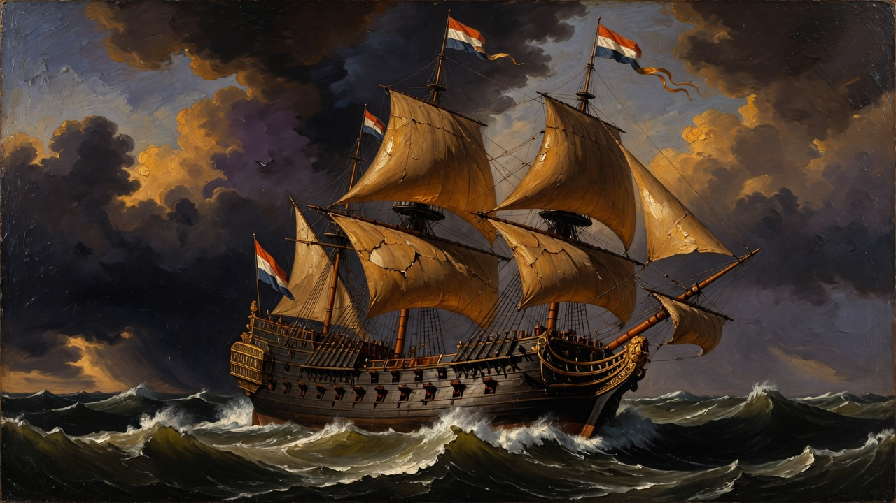
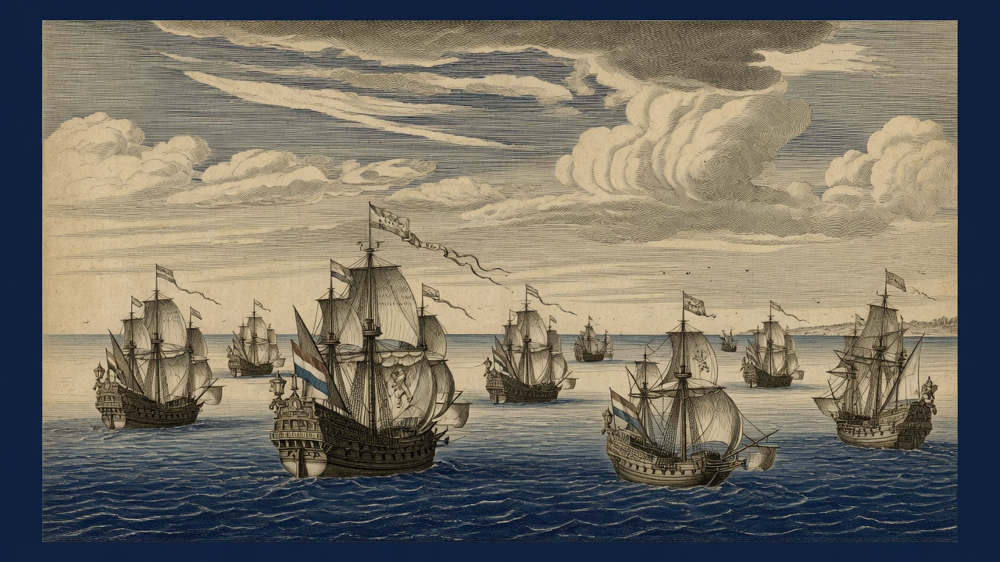
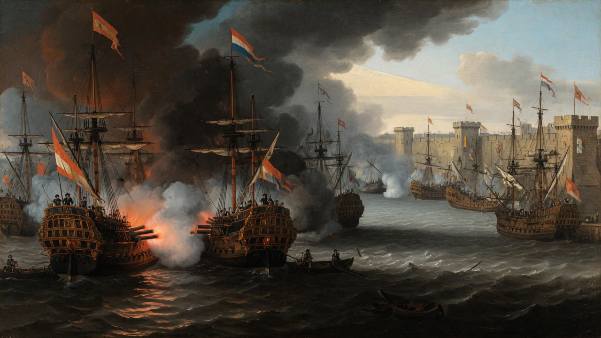
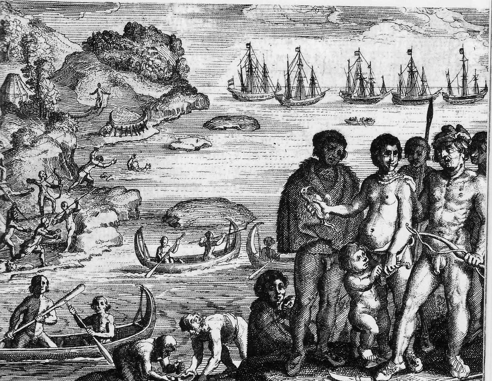

VOC 원정대 · 1623 — 1626
Nassausche Vloot
은 수송선을 나포하고 태평양 연안에 식민지를 세우려 했던 네덜란드의 야망. 11척의 함선과 1,600명의 병사가 출항했다. 3년 후, 목표는 하나도 달성되지 않았다.

Background · 01
Order of Battle · 02

1623년 4월 29일 — 고레 항을 떠나는 나사우 함대
Route · 03
Callao Blockade · 04

1624년 5월 8일 — 칼라오 앞바다, 98일 봉쇄 시작
Analysis · 05
Historical Legacy · 06

에르미트 제도 — 르 에르미트 제독의 이름이 남은 유일한 유산